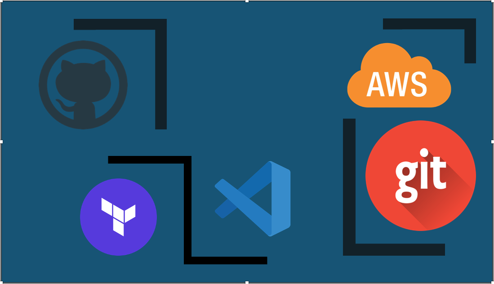

Welcome to LabHub — a collection of hands-on DevOps labs showcasing infrastructure automation using Terraform, GitHub Actions, and AWS.
Each lab demonstrates real-world CI/CD workflows, infrastructure as code, and cloud networking patterns.
Explore all labs in the LabHub section.
